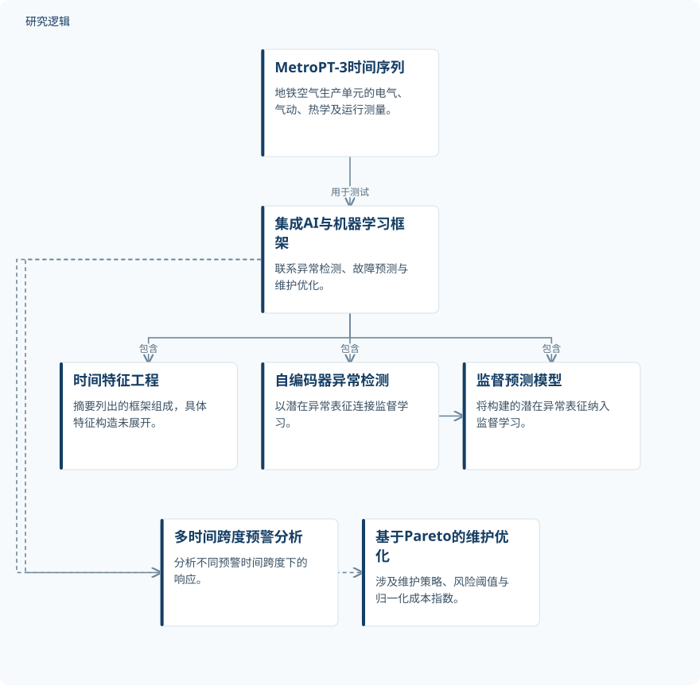

摘要解读
面向智能机电系统预测性维护与工程决策的人工智能及机器学习集成框架
An Integrated AI and Machine Learning Framework for Intelligent Electromechanical Systems, Predictive Maintenance, Engineering Optimization, and Data-Driven Decision Making
解读更新 2026-11-09 13:05 · 依据公开摘要整理，未核验全文细节
预测维护的难点，不只是识别异常，还在于把异常信号转化为故障预警和维护决策。这项研究以地铁列车空气生产单元的数据为对象，探索将这些通常分开处理的任务纳入统一框架。
文章目录
从识别异常走向维护决策
机电系统的多变量传感器数据，为及时、可靠且可执行的维护决策提供了基础。但摘要指出，异常检测、故障预测与维护优化往往被分别处理。本文关注的核心问题，是如何连接这些环节，而不只是提高某个预测模型的表现。
把潜在异常表征接入监督预测
研究构建了集成人工智能与机器学习框架，涵盖时序特征工程、基于自编码器的异常检测、监督预测与多时间跨度预警分析，以及基于帕累托方法的维护优化。摘要强调的方法联系，是将经过特征工程处理的潜在异常表征融入监督学习。
框架在MetroPT-3工业时间序列数据集上测试。数据来自地铁列车的空气生产单元，包含电气、气动、热学和运行测量信息。本解读仅依据摘要，无法进一步确定特征构造、自编码器配置及优化目标的具体定义。
依据摘要整理的集成维护框架示意


概括摘要明确列出的框架组成及异常表征与监督学习的联系，不表示具体执行顺序，也不是论文原图。
下载 SVG图示关系说明
实线表示相邻阶段的信息流，虚线表示跨阶段联系或反馈。
MetroPT-3数据 → 集成人工智能与机器学习框架：用于框架测试；集成人工智能与机器学习框架 → 时序特征工程：包含；集成人工智能与机器学习框架 → 自编码器异常检测：包含；集成人工智能与机器学习框架 → 监督预测与多时间跨度预警：包含；集成人工智能与机器学习框架 → 基于帕累托方法的维护优化：包含；自编码器异常检测 → 监督预测与多时间跨度预警：潜在异常表征融入
模型表现、预警窗口与维护成本
摘要报告，表现最佳的模型是Autoencoder + XGBoost：精确率为0.918，召回率为0.893，F1分数为0.905，ROC-AUC为0.974，PR-AUC为0.928，MCC为0.889。这些结果描述了该组合在文中测试设置下的表现，不宜直接外推至其他设备。
预警分析中，30分钟时间跨度取得最佳预警响应。维护优化中，风险阈值为0.52时采用平衡维护策略，获得最佳归一化成本指数0.58。这里的成本指数不能直接解释为实际费用，也不能据此推算成本降低比例。
摘要尚不能交代的比较与验证边界
摘要未报告样本规模、故障事件数量、数据划分方式和类别分布，也未列出完整比较模型、重复评估结果或不确定性信息。因此，尚无法仅凭这些指标判断比较是否充分，以及结果对不同数据划分是否稳定。
“最佳预警响应”的评价标准、归一化成本指数的计算方式，以及平衡维护策略的约束条件，在摘要中均不明确。跨设备、跨工况和实际部署的验证范围也无法判断；这些是当前资料的边界，不代表论文没有开展相关工作。
阅读启发：追问预测如何支撑行动
阅读启发：值得继续核对的，是异常表征如何进入监督模型，以及预警时间跨度、风险阈值与维护成本如何关联。对智能运维读者而言，本文的阅读价值不仅在于最佳模型名称，也在于观察预测结果如何被组织为维护决策依据；其实际适用性仍需结合完整方法与验证条件判断。
以上为本站阅读启发与建议，不是论文已验证的结论。